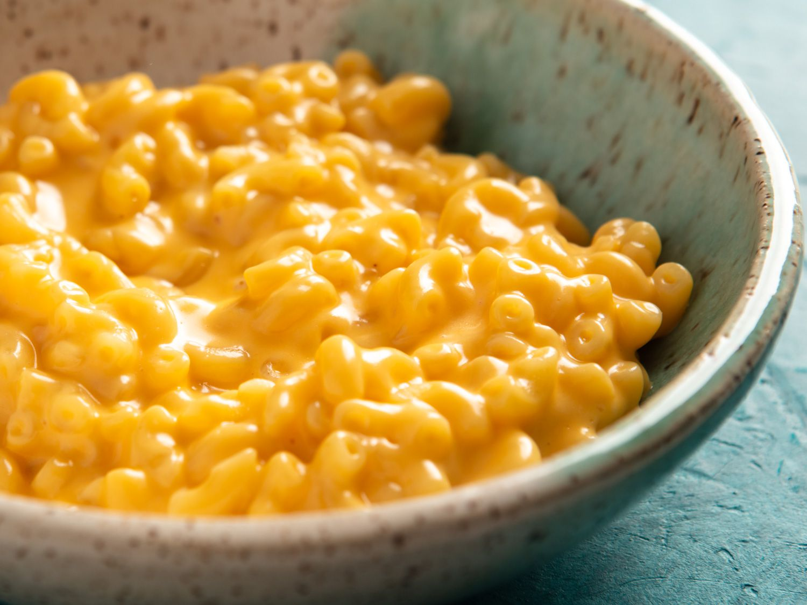

My recipe

Introduction
Today you will learning my recipe for Mac and Cheese.
The reason we are learing how to make Mac and Cheese is because it's tasty and easy to make.
ingredients
- lb rotelle pasta 3⁄4
- lb sharp cheddar cheese, shredded 1⁄2
- lb gruyere cheese, shredded 1⁄2
- cup asiago cheese, shredded 1⁄2
- cup Fontina cheese, shredded 3
- tablespoons unsalted butter 3
- tablespoons all-purpose flour 2
- cups milk 1
- teaspoon onion powder 1⁄2
- teaspoon salt 1⁄4
- teaspoon dried mustard 1⁄4
- teaspoon ground nutmeg 1⁄4
- teaspoon ground cayenne pepper 1
- cup panko breadcrumbs
instructions
- Heat oven to 350°C.
Coat a 3 quart rectangular baking dish with non-stick spray.
Bring a large pot of lightly salted water to boiling.
- Toss all the shredded cheeses together in a large bowl, set aside.
- Melt butter in a medium-sized saucepan over medium heat. Whisk in the flour until smooth and slightly bubbly.
- In a thin stream, whisk in the milk. Stir in the onion powder, salt, nutmeg, dried mustard and cayenne.
- Bring to a boil over medium high heat. Reduce heat and simmer 3 minutes. Remove from heat; whisk in 2 ½ cups of the cheese mixture and stir until smooth. Cover to retain the heat.
- Once water boils, add pasta. Cook until your desired doneness, then drain. In the pasta container, stir together the cooked pasta and cheese sauce.
- Pour half of the mixture into the prepared dish. Sprinkle with a generous cup of the reserved cheese. Spoon remaining cheese-covered pasta into the dish and top with the remaining cheese.
- Add 1 cup of Japanese Panko Bread crumbs to the top of mixture.
- Bake at 350 °C for 30 minutes or until the Panko crumbs are lightly browned and the cheese is bubbly. Cool slightly before serving.